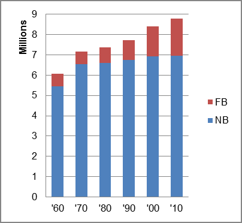

The foreign-born (FB) population increased from 615,479 in 1960 to 1,844,581 in 2010. That was an increase of 199.7 percent. The foreign-born share changed from 10.1 percent to 21.0 percent.
The share of the overall population that was native-born (NB) increased by 27.4 percent.
New Jersey: Population 1960-2010 
The first chart below shows the three population change factors for three periods adjusted for annual average amounts. Domestic migration (NDM) was consistently negative, and B-D and NIM both accounted for about half of the overall population increase.
The second chart shows the same data but with an adjustment to reflect births to immigrants shifted to NIM. In it, NIM accounted for most of the added population in all periods.
New Jersey: Sources of Population Change 1990-2013 New Jersey: Sources of Population Change (Adjusted) 1990-2013
B-D NDM NIM B-D NDM NIM 90-'99 52.1% neg. 47.9% 90-'99 21.5% neg. 78.5% 00-'09 48.4% neg. 51.6% 00-'09 9.4% neg. 90.6% 10-'13 44.1% neg. 55.9% 10-'13 2.2% neg. 97.8%